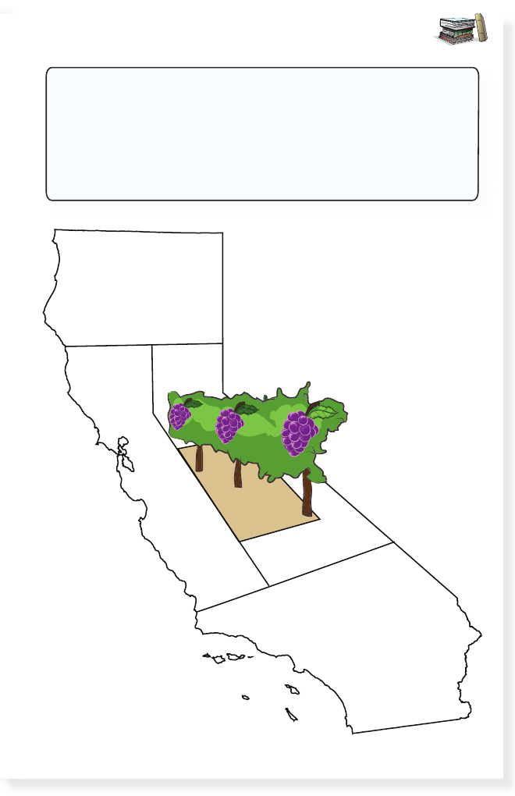

EXTENDED READING ACTIVITY
California is famous for the food that it grows. Pretend you
are a farmer. Think of some fruits and vegetables. Decide
where you would grow each one in California and draw
them in different boxes on this map. One example, grapes,
is done for you and placed in the Central Valley.
27